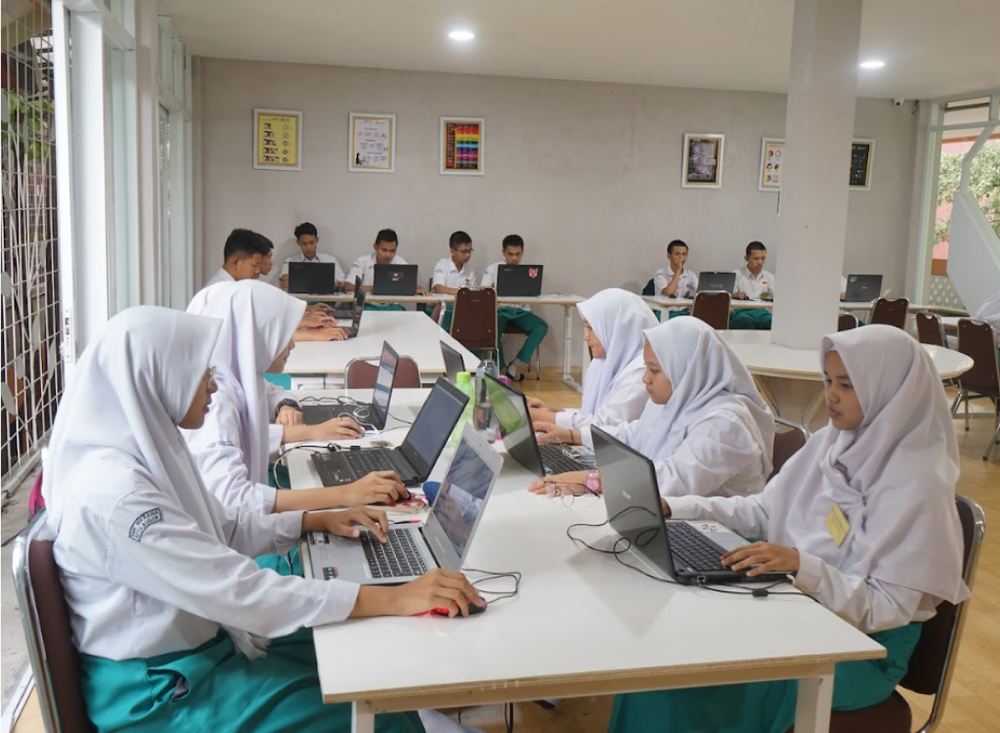

Area Kelas
Ruang Kelas Teori
Gedung sekolah Wikrama dirancang dengan sirkulasi udara dan jendela yang asri untuk mendukung efisiensi energi.
- Buka gorden jendela saat siang hari untuk memanfaatkan cahaya matahari alami.
- Matikan saklar lampu dan kipas ketika kelas ditinggalkan untuk salat berjamaah atau jam olahraga.
- Pastikan piket kelas mematikan seluruh saklar sebelum meninggalkan ruangan di sore hari.